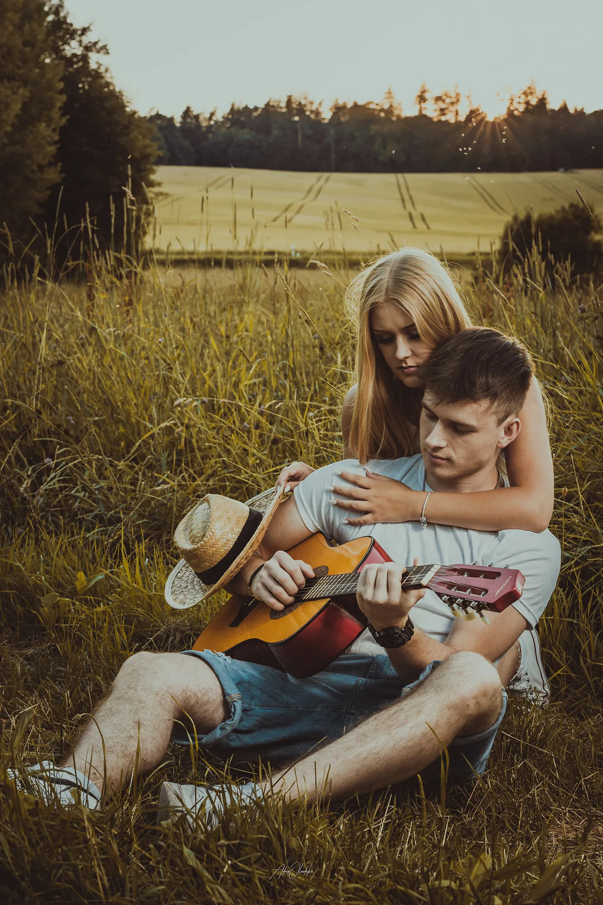
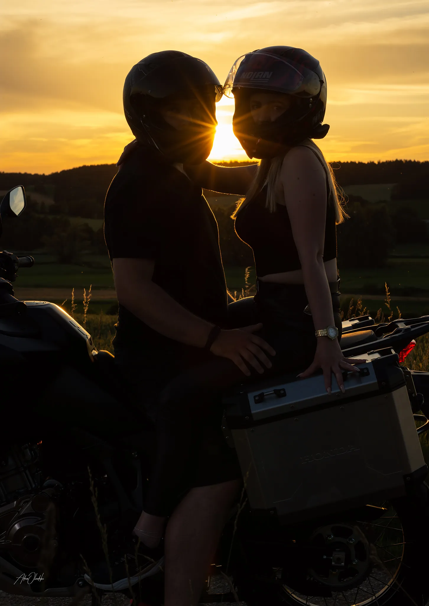
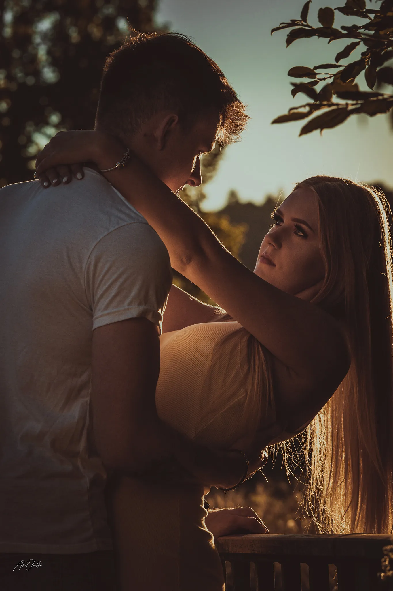
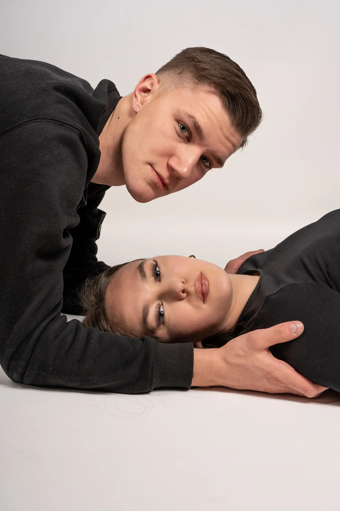
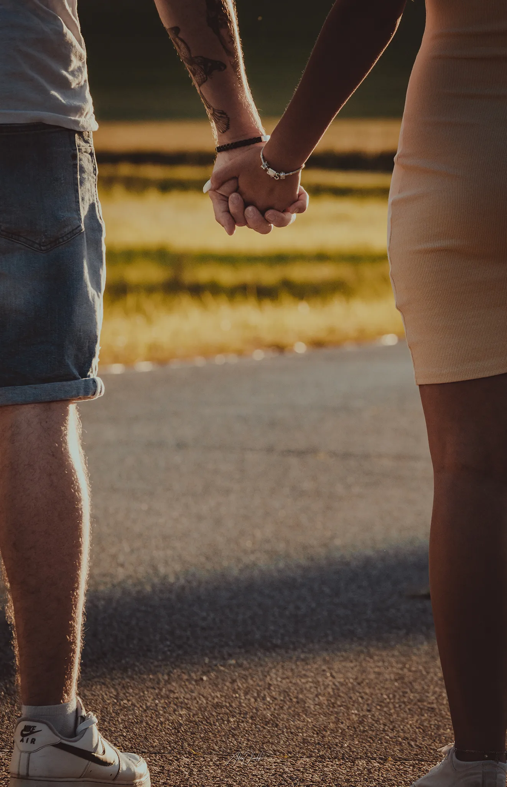
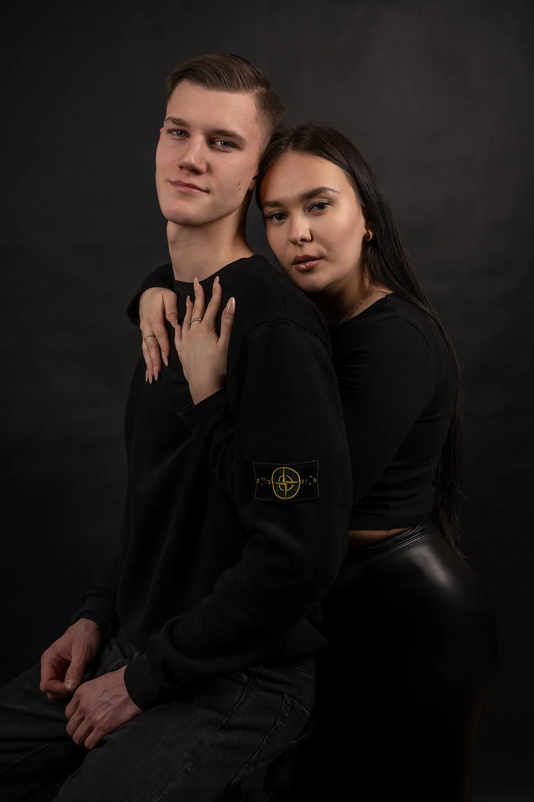

Paarfotografie
Die Magie Eurer Gemeinsamen Momente Einfangen
Jedes Paar hat seine einzigartige Geschichte, voller gemeinsamer Erlebnisse, Emotionen und unvergesslicher Momente. Paarfotos sind mehr als nur Bilder; sie sind eingefangene Augenblicke, die die Magie Eurer Beziehung festhalten.
Portfolio Paarfotografie











"Being deeply loved by someone gives you strength, while loving someone deeply gives you courage."
paarfotograf rottenburg an der laaber / paarshooting landshut / couple shooting regensburg / engagement shooting ingolstadt / paarbilder kelheim / paarfotografie abensberg / paarfotos mainburg / liebesgeschichte fotos niederbayern / couple fotos outdoor
/ münchen fotograf / fotograf münchen / natürliche fotografie münchen / moderne fotografie münchen / stilvolle fotografie münchen / professionelle portraits münchen / fashion shooting münchen / personal branding münchen / business portrait münchen